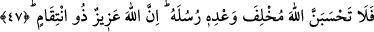
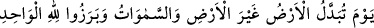
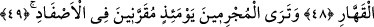
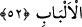
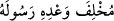
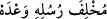
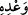

KİMSENİN YAPTIĞI
YANINA KALMAZ
47. O halde, sakın Allah’ın peygamberlerine verdiği sözden cayacağını sanma!
Çünkü Allah mutlak üstündür, kimsenin yaptığını yanına bırakmaz.
48. O gün yer başka bir yere çevrilir, gökler de başka göklere çevrilir. Bütün
yaratılmışlar, tek ve gücüne karşı durulamaz olan Allah’ın huzûrunda görünürler.
49. O gün, günahkârları birbirlerine yaklaştırılarak zincirlere vurulmuş görürsün.
50. Onların gömlekleri katrandandır, yüzlerini de ateş bürümektedir.
51. Allah herkese kazandığının karşılığını vermek için (onları diriltecektir.)
Şüphesiz Allah, hesabı çabuk görendir.
52. İşte bu (Kur’an), kendisiyle uyarılsınlar, Allah’ın ancak bir tek Tanrı olduğunu
bilsinler ve akıl sâhipleri iyice düşünüp öğüt alsınlar diye insanlara (gönderilmiş)
bir bildiridir.
“O halde, sakın Allah’ın” zâlimlere de azâb edeceğine ve mü’minlere yardım
edeceğine dâir “peygamberlerine verdiği sözden cayacağını sanma!” Yâni bizim
peygamberlerimize verdiğimiz sözden kesinlikle caymadığımıza dair kesin bilgin üzere
devâm et.
“
” ibaresi esasen “
” şeklindedir. Bu şekilde “
”
kelimesinin öne alınması, Allah kimseye verdiği sözden caymadığı halde nasıl en
hayırlı ve seçkin kulları olan peygamberlerine verdiği sözden cayacağını bildirmek
içindir.
Vaad, bir menfaat meydana gelmeden önce onun ulaştırılacağını haber vermektir.
“Çünkü Allah mutlak üstündür.” Kendisine karşı hîle yapılamayacak kadar üstün,
karşı gelinemeyecek kadar kudretlidir.